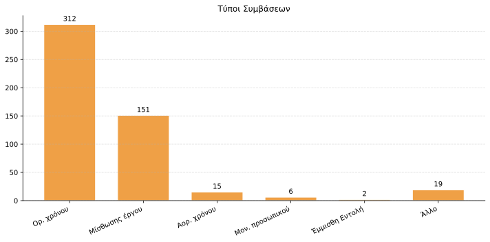
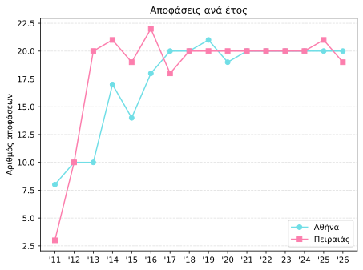
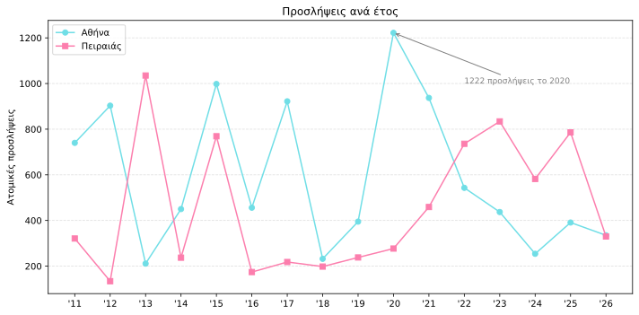

Πώς «επενδύουν» οι δύο μεγάλοι δήμοι της Αττικής στο προσωπικό τους;
Με μια ανάλυση των αναρτημένων αποφάσεων στη Δι@ύγεια των δήμων Αθηναίων και Πειραιώς, αποκαλύπτεται πόσες θέσεις προκηρύσσονται, σε τι ειδικότητες, για πόσο χρόνο και το κόστος τους.

Η Αθήνα και ο Πειραιάς δύο από τους μεγαλύτερους σε πληθυσμό δήμους της χώρας – πρώτος και πέμπτος σύμφωνα με την απογραφή του 2021. Συνολικά, οι δύο δήμοι είναι υπεύθυνοι για πάνω από 800.000 μόνιμους κατοίκους, για την εύρυθμη λειτουργία των σχολείων, των κοινωνικών υπηρεσιών, την καθαριότητα, την πολιτική προστασία και τη συντήρηση πολλών υποδομών. Ωστόσο, τίποτα από αυτά δεν ήταν δυνατό χωρίς τη συμβολή των δημοτικών υπαλλήλων, πολλοί εκ των οποίων δεν είναι μόνιμοι. Έτσι, χρόνος αφιερώνεται στην προκήρυξη θέσεων με διαγωνισμό, τον απευθείας διορισμό και την σύναψη συμβάσεων για την τέλεση κάποιου έργου. Με τη βοήθεια της Δι@ύγειας μπορούμε να ελέγξουμε και να αναλύσουμε ακριβώς αυτές τις πράξεις του δημοσίου σε βάθος χρόνου. Τι συμπεράσματα βγάζουμε, κοιτώντας οι αποφάσεις από το 2011 μέχρι φέτος;
Ξεκινώντας από τις συμβάσεις εργασίας των δύο αυτών μεγάλων δήμων, το μεγαλύτερο τμήμα καταλαμβάνουν οι συμβάσεις ορισμένου χρόνου με ποσοστό άνω του 50 τοις εκατό (βλ. πίνακα 1). Έπειτα, ακολουθούν οι μισθώσεις έργου – συνολικά 151 επί όλων των πράξεων. Ως προς τις ατομικές προσλήψεις, τα τελευταία 5 χρόνια ο δήμος Αθηναίων και Πειραιώς προσλαμβάνουν περίπου 492 και 654 εργαζομένους αντίστοιχα.


Αναφορικά με τις ειδικότητες, ανάμεσα στις τοπ των τελευταίων δεκαπέντε ετών βρίσκονται οι οδηγοί, οι καθαριστές, οι οδηγοί απορριμματοφόρων, οι γιατροί, οι κοινωνικοί φροντιστές. Αξίζει να αναφερθεί ότι 14 ξεχωριστές αποφάσεις αναφέρονται στην πρόσληψη ειδικών συμβούλων και τρεις σε επιστημονικούς υπεύθυνους.
Τέλος, βλέποντας τον πίνακα των ετήσιων προσλήψεων βλέπουμε ότι και οι δύο δήμοι κινούνται σε παρόμοιες κλίμακες στο ίδιο χρονικό διάστημα, παρόλο που ο δήμος της πρωτεύουσας είναι σχεδόν τέσσερις φορές μεγαλύτερος τόσο σε έκταση όσο και σε πληθυσμό. Παράλληλα, ο δήμος Αθηναίων παρουσιάζει εκτίναξη στις προσλήψεις στην πρώτη χρονιά της Πανδημίας (ρεκόρ 1222 προσλήψεων). Φαίνεται ότι η κατάσταση εκτάκτου ανάγκης που έφερε η ασθένεια Covid-19 ώθησε τις δημοτικές αρχές να προσλάβουν προσωπικό, για να ανταπεξέλθουν στο βάρος των περιστάσεων. Με τον ίδιο τρόπο, η υγειονομική κρίση κινητοποίησε και το δήμο του Πειραιά να αυξήσει τις προσλήψεις του, οι οποίες από το 2016 με 2020 ήταν σε χαμηλότερα από τα σημερινά επίπεδα (βλ. πίνακα 3).

Συνολικά, η εικόνα που προκύπτει δείχνει ότι οι δύο δήμοι βασίζονται σε μεγάλο βαθμό σε ευέλικτες μορφές απασχόλησης για να καλύψουν πάγιες και έκτακτες ανάγκες. Η ανάλυση των δεδομένων της Δι@ύγειας αναδεικνύει όχι μόνο τις προτεραιότητες στελέχωσης των δημοτικών υπηρεσιών, αλλά και τον τρόπο με τον οποίο εξωτερικά γεγονότα, όπως η πανδημία, επηρεάζουν άμεσα τις αποφάσεις για την ενίσχυση του ανθρώπινου δυναμικού.